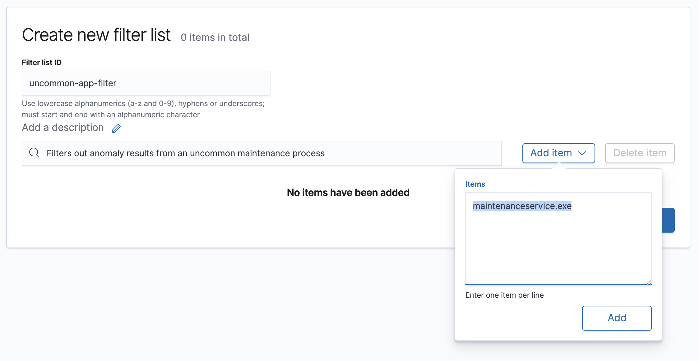
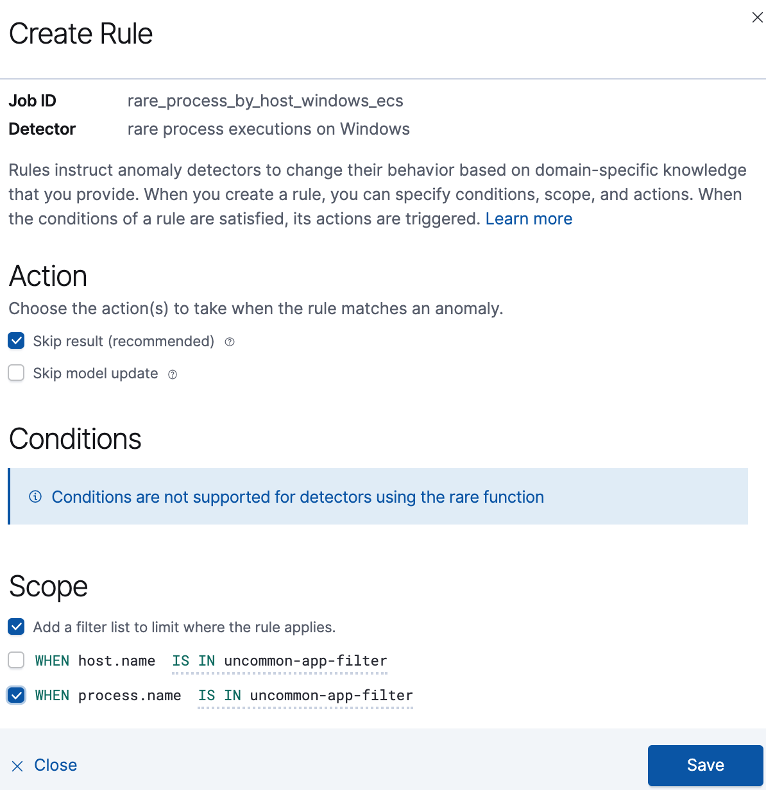
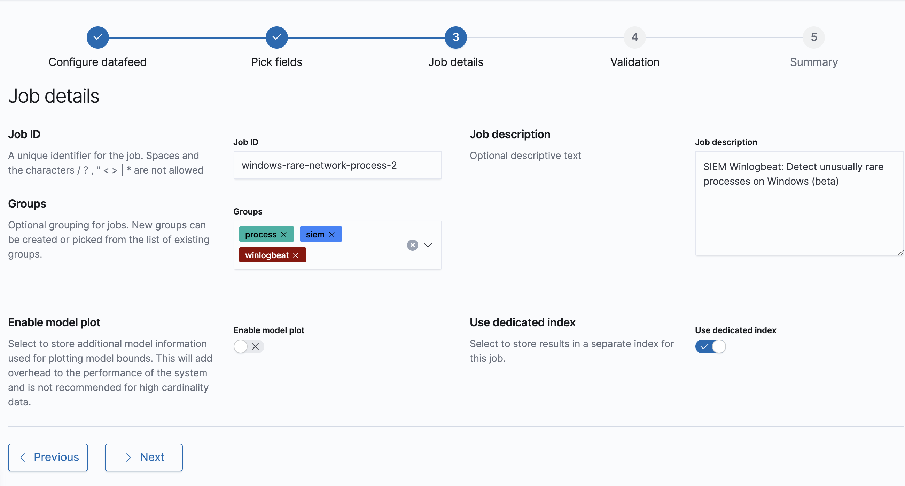
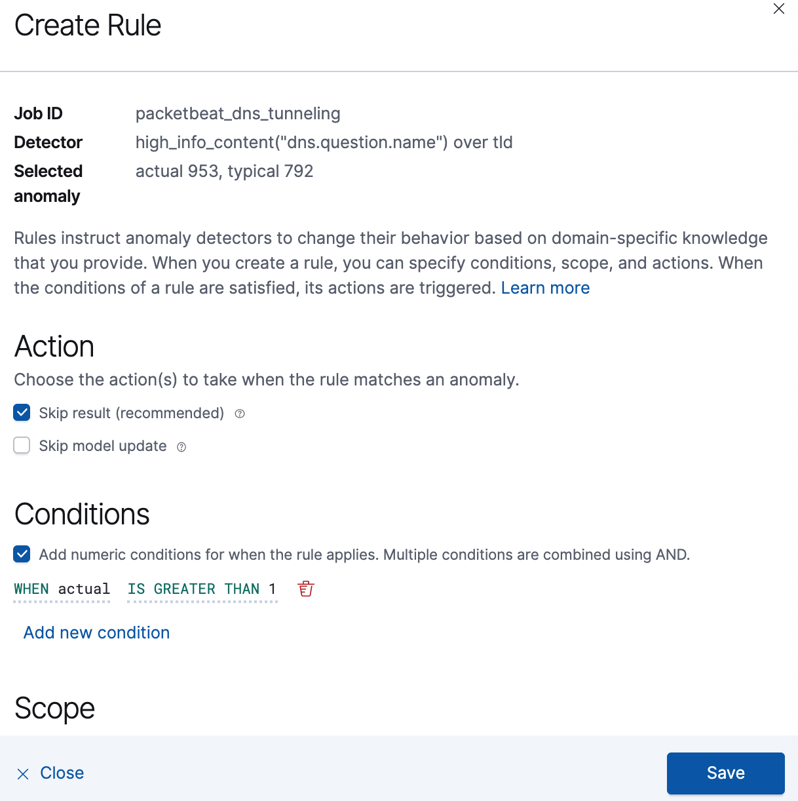

Optimizing anomaly resultsedit
To gain clearer insights into real threats, you can tune the anomaly results. The following procedures help to reduce the number of false positives:
Filter out anomalies from rarely used applications and processesedit
When anomalies include results from a known process that only runs occasionally, you can filter out the unwanted results.
For example, to filter out results from a housekeeping process, named
maintenanceservice.exe, that only executes occasionally you need to:
Create a filter listedit
- Go to Machine Learning → Anomaly Detection → Settings.
-
Click Filter Lists and then New.
The Create new filter list pane is displayed.
- Enter a filter list ID.
- Enter a description for the filter list (optional).
- Click Add item.
-
In the Items textbox, enter the name of the process for which you want to filter out anomaly results (
maintenanceservice.exein our example). -
Click Add and then Save.
The new filter appears in the Filter List and can be added to relevant jobs.
Add the filter to the relevant jobedit
- Go to Machine Learning → Anomaly Detection → Anomaly Explorer.
- Navigate to the job results for which the filter is required. If the job results are not listed, click Edit job selection and select the relevant job.
-
In the actions column, click the gear icon and then select Configure rules.
The Create Rule window is displayed.
 -
Select:
- Add a filter list to limit where the rule applies.
-
The WHEN statement for the relevant detector (
process.namein our example). - The IS IN statement.
-
The filter you created as part of the Create a filter list procedure.
For more information about detectors, see Anomaly detection jobs.
- Click Save.
Changes to rules only affect new results. All anomalies found by the job before the filter was added are still displayed.
Clone and rerun the jobedit
If you want to remove all the previously detected results for the process, you must clone and run the cloned job.
Running the cloned job can take some time. Only run the job after you have completed all job rule changes.
- Go to Machine Learning → Anomaly Detection → Job Management.
- Navigate to the job for which you configured the rule.
-
Optionally, expand the job row and click JSON to verify the configured filter
appears under
custom rulesin the JSON code. -
In the actions column, click the more (three dots) icon and select Clone job.
The Configure datafeed page is displayed.
- Click Data Preview and check the data is displayed without errors.
- Click Next until the Job details page is displayed.
-
Enter a Job ID for the cloned job that indicates it is an iteration of the original one. For example, append a number or a username to the original job name, such as
windows-rare-network-process-2. - Click Next and check the job validates without errors. You can ignore warnings about multiple influencers.
-
Click Next and then Create job.
The Start <job name> window is displayed.

- Select the point of time from which the job will analyze anomalies.
-
Click Start.
After a while, results will start to appear on the Anomaly Explorer page.
Define an anomaly threshold for a jobedit
Certain jobs use a high-count function to look for unusual spikes in process events. For some processes, a burst of activity is a normal, such as automation and housekeeping jobs running on server fleets. However, sometimes a high-delta event count is unlikely to be the result of routine behavior. In these cases, you can define a minimum threshold for when a high-event count is considered an anomaly.
Depending on your anomaly detection results, you may want to set a
minimum event count threshold for the packetbeat_dns_tunneling job:
- Go to Machine Learning → Anomaly Detection → Anomaly Explorer.
-
Navigate to the job results for the
packetbeat_dns_tunnelingjob. If the job results are not listed, click Edit job selection and selectpacketbeat_dns_tunneling. -
In the actions column, click the gear icon and then select Configure rules.
The Create Rule window is displayed.
 -
Select Add numeric conditions for when the rule applies and the following
whenstatement:WHEN actual IS GREATER THAN <X>
Where
<X>is the threshold above which anomalies are detected. - Click Save.
- To apply the new threshold, rerun the job (Job Management → Actions → Start datafeed).